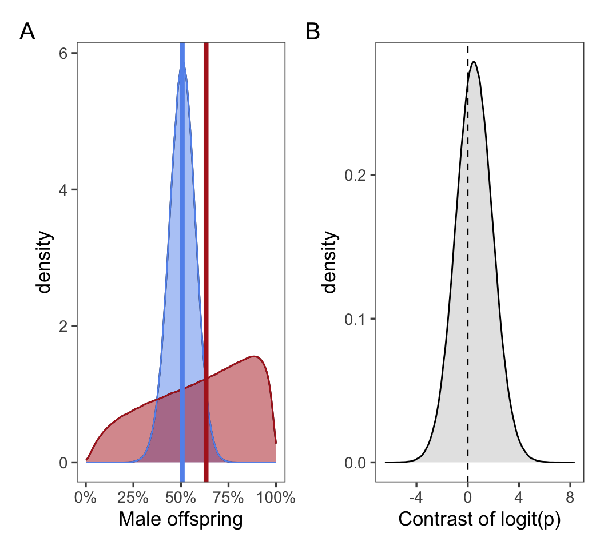

Elephant seal reproductive success declines with age.
Reproductive declines persist to the next generation (maternal effect senescence). That is, offspring survival and recruitment are decreased.
Offspring sex ratios shift towards males with old age.
Phenology is shifted later for older animals and breeders.
Results
First, address detection probability. DO THIS IN MARK.
n = 1203 distinct animals.
Raw data
Resighting plot (image) and age structure bar plot
Figure 1
H1: Age distribution and breeding status
We predicted that breeding success would decline with age. We found that breeding success increases to prime age, then decreases at older ages (?@fig-age_dist).
Estimate Std. Error z value Pr(>|z|)
(Intercept) 1.616004 0.3243604 4.982125 6.288972e-07
poly(age10, 2, raw = TRUE)1 2.780641 0.6781789 4.100158 4.128676e-05
poly(age10, 2, raw = TRUE)2 -1.315489 0.3382061 -3.889607 1.004068e-04
Figure 2
Sample size n = 4404.
H2: Maternal effect senescence
We predicted that reproductive declines would carry over to the next generation - that is, pups born to older mothers would have decreased survival and recruitment success.
We found that neither pup survival nor recruitment is significantly affected by maternal age (Figure 3).
We reject our hypothesis: reproductive declines do not persist to the next generation, and there is no evidence of maternal effect senescence.
[1] "Survival"
Estimate Std. Error z value Pr(>|z|)
(Intercept) -1.7447753 0.4452157 -3.918944 8.893788e-05
poly(age10, 2, raw = TRUE)1 1.7266087 1.0496885 1.644877 9.999512e-02
poly(age10, 2, raw = TRUE)2 -0.9673599 0.5768106 -1.677084 9.352600e-02
[1] "Recruitment"
Estimate Std. Error z value Pr(>|z|)
(Intercept) -1.8484393 0.751905 -2.4583414 0.01395804
poly(age10, 2, raw = TRUE)1 0.6518459 1.888941 0.3450853 0.73003022
poly(age10, 2, raw = TRUE)2 -0.6190951 1.088583 -0.5687163 0.56954872
Figure 3
Sample size n = 1331.
H3: Changes in pup sex ratio with increased maternal age
We found that as maternal age increases, pup sex skews slightly towards males (?@fig-sex_ratio).
Age class
Age
se(Age)
p(Age) != 0
Pre-senescence
-0.0936
0.286
0.744
Post-senescence
0.3930
0.718
0.584
Figure 4: The effect of age on offspring sex ratio was not significantly different for pre- and post-senescence adults. A Raw data (points with error bars, indicating mean and standard error of the proportion) and model predictions (lines with 95% confidence intervals). B Estimate and standard error of age coefficients in pre- and post-senescence models.
Sample size n = 1777.
There appears to be a step change biasing offspring sex ratio towards males post-senescence. We simulated the sex ratio of 1,000,000 offspring born to mothers pre- and post-senesecence using the coefficient estimates and standard errors of the fitted sex ratio models. The mean offspring sex ratio increases from 51.3% male before maternal age 12 to 61.2% male after maternal age 12. However, the uncertainty in post-senescence sex ratio is considerable, and only 59.3% of the contrasts of simulated post- and pre-senescence sex ratios are biased towards male offspring. I.e., a simulated post-senescent adult female was more likely to have a male offspring than a simulated pre-senescent adult female in 59.3% of simulations.

Figure 5: Simulated sex ratios of offspring born to pre- and post-senescence adults. A Comparison of simulated sex ratios by pre- (blue) and post- (red) senescence adults. The mean (vertical lines) sex ratio of post-senescence adults is greater than pre-senescence adults. However the distributions overlap extensively. B The contrast of post-senescence sex ratio relative to pre-senescence is greater than 0 in only 59.3% of simulations.
Supplemental Material
Generalized linear mixed model fit by maximum likelihood (Laplace
Approximation) [glmerMod]
Family: binomial ( logit )
Formula: observed_int ~ age10 * age_cat + (1 | animalID) + (1 | year_fct)
Data: sealdat
Control: glmerControl(optimizer = "bobyqa")
AIC BIC logLik deviance df.resid
2567.7 2606.0 -1277.8 2555.7 4398
Scaled residuals:
Min 1Q Median 3Q Max
-5.9974 0.1778 0.2557 0.3510 0.7474
Random effects:
Groups Name Variance Std.Dev.
animalID (Intercept) 0.4474 0.6688
year_fct (Intercept) 0.6122 0.7824
Number of obs: 4404, groups: animalID, 1203; year_fct, 36
Fixed effects:
Estimate Std. Error z value Pr(>|z|)
(Intercept) 2.1173 0.2537 8.346 < 2e-16 ***
age10 1.0804 0.3283 3.291 0.000997 ***
age_catOld 2.5838 0.7601 3.399 0.000676 ***
age10:age_catOld -2.4078 0.6131 -3.928 8.58e-05 ***
---
Signif. codes: 0 '***' 0.001 '**' 0.01 '*' 0.05 '.' 0.1 ' ' 1
Correlation of Fixed Effects:
(Intr) age10 ag_ctO
age10 -0.771
age_catOld -0.213 0.257
ag10:g_ctOl 0.404 -0.528 -0.939
Supplemental Table 1: Statistics for breeding success model.
Table 1
[1] FALSE
Table 2
[1] FALSE
Table 3
[1] FALSE
Supplemental table for offspring survival
Table 4
[1] FALSE
Supplemental table for pup sex ratio model.
Table 5
[1] FALSE
Table 6
[1] FALSE
Supplemental table for male biased sex ratios at older ages.
Table 7: Offspring sex ratio skewed towards males with increasing maternal age. Mothers age 12, 13, and 17 gave birth to significantly more male than female pups (bold).
[1] FALSE
Supplemental figure for phenology models
[1] FALSE
Supplemental table for the phenology models.
[1] FALSE
Source Code
---title: "Elephant Seal Age JAE Intraspecific Variation"format: html: echo: false fig-width: 5 fig-height: 5 code-fold: true code-tools: true warning: falseeditor: visualbibliography: references.bib---```{r}#| label: setup#| include: false library(ggthemes)library(cowplot)library(lme4)library(lmerTest) # Loading this library will automatically append p-values to lmer models estimated using something called Satterthwaite's methodlibrary(merTools)library(tidyverse)library(ggeffects)library(ggridges)library(patchwork)source(here::here("R/format.R"))theme_set(theme_few(base_size =13))age_senesce <-11sealdat <-read_csv(here::here("data/raw/128L pull 2023_12_05.csv"), show_col_types =FALSE) %>%mutate(observed =if_else(observed =="B", "Breeder", "Non-breeder"), observed_int =if_else(observed =="Breeder", 1, 0), pup_survived = pupseeneveragain >0) %>%filter(age >3, year >1987) %>%mutate(animalID =factor(animalID),year_fct =factor(year),age10 = age /10,age_cat =factor(age >= age_senesce, labels =c("Young", "Old"))) %>%group_by(animalID) %>%mutate(longevity =ifelse(max(year) <2020,max(age),NA),longevity10 = longevity /10) %>%ungroup()resight <-read.csv(here::here("data/raw/fullresights.csv")) %>%select(animalID, resightID, season, date, timeofyear, calyear, yday) %>%mutate(animalID =as.factor(animalID))```# IntroductionOur hypotheses:1. Elephant seal reproductive success declines with age.2. Reproductive declines persist to the next generation (maternal effect senescence). That is, offspring survival and recruitment are decreased.3. Offspring sex ratios shift towards males with old age.4. Phenology is shifted later for older animals and breeders.# ResultsFirst, address detection probability. DO THIS IN MARK.n = `r n_distinct(sealdat$animalID)` distinct animals.### Raw dataResighting plot (image) and age structure bar plot```{r}#| label: fig-raw-data#| fig-width: 9sighting_img <- sealdat %>%group_by(animalID) %>%summarize(yearborn = yearborn[1],first_obs =min(year),last_obs =max(year),.groups ="keep") %>%reframe(yearborn = yearborn,year = yearborn:last_obs,age = year - yearborn,prerecruit = year < first_obs) %>%filter(year >1987) %>%left_join(sealdat %>%group_by(animalID, year) %>%summarize(observed_int =max(observed_int),.groups ="drop"),by =c("animalID", "year")) %>%mutate(observed =case_when( age ==0~"Born", prerecruit ~"Pre-recruit", observed_int ==0~"Non-breeder", observed_int ==1~"Breeder",is.na(observed_int) ~"Unobserved" ),observed =factor(observed, levels =c("Born","Pre-recruit","Non-breeder","Breeder","Unobserved")) ) %>%group_by(animalID) %>%mutate(longevity =max(age),yearborn =na.omit(yearborn)[1]) %>%ungroup() %>%arrange(yearborn, longevity, animalID) %>%mutate(animalID =factor(animalID, levels =unique(animalID))) %>%ggplot(aes(year, animalID)) +geom_raster(aes(fill = observed)) +scale_fill_viridis_d(direction =-1) +guides(fill =guide_legend(position ="inside", direction ="horizontal",ncol =1,byrow =TRUE)) +labs(y ="Individual") +theme(axis.text.y =element_blank(),axis.ticks.y =element_blank(),axis.title.x =element_blank(),legend.title =element_blank(),legend.position.inside =c(0.01, 0.99),legend.justification =c(0, 1),legend.background =element_blank(),legend.key.size =unit(4, "mm"),legend.text =element_text(size =8))age_dist <- sealdat %>%filter(age <22) %>%group_by(age) %>%count(age) %>%ggplot(aes(x = age, y = n)) +geom_col(fill ="grey50") +labs(x ="Age (Years)", y ="Number of individuals") +theme()(sighting_img | age_dist) +plot_layout(widths =c(2, 1))```### H1: Age distribution and breeding status~~We predicted that breeding success would decline with age. We found that breeding success increases to prime age, then decreases at older ages (@fig-age_dist).~~```{r}#| label: breeding-modbreed_age_mod <-glmer( observed_int ~poly(age10, 2, raw =TRUE) + (1| animalID) + (1| year_fct), sealdat,family ="binomial",control =glmerControl(optimizer ="bobyqa"))summary(breed_age_mod)$coefficients``````{r}#| label: fig-breeding-mod # Summarize the raw databreed_nonbreed <- sealdat %>%group_by(age) %>%summarize(n_observed =n(), perc_breed =sum(observed_int) / n_observed, se = (perc_breed * (1- perc_breed) / n_observed)^0.5) %>%filter(age <=20)# Create POPULATION-LEVEL (i.e. without rand effects) predictionsbreed_pred_pop <-ggpredict( breed_age_mod, terms ="age10 [all]",type ="fixed",interval ="confidence") %>%as_tibble() %>%mutate(age = x *10) %>%filter(age <=20)# Create WEIGHTED-AVERAGE predictions using random effectsseal_years <-count(sealdat, year_fct)breed_pred_wgt <-ggpredict( breed_age_mod,terms =c("age10 [all]", "year_fct [all]"),type ="random",interval ="confidence") %>%as_tibble() %>%mutate(age = x *10,year_fct = group) %>%filter(age <=20) %>%left_join(seal_years, by ="year_fct") %>%group_by(age) %>%summarize(predicted =weighted.mean(predicted, n))ggplot(breed_pred_pop, aes(age, predicted)) +geom_ribbon(aes(ymin = conf.low, ymax = conf.high), alpha =0.2) +geom_line(linewidth =1.2, color ="grey50") +geom_line(data = breed_pred_wgt, color ="cornflowerblue", linewidth =1.2) +geom_pointrange(aes(y = perc_breed, ymin = perc_breed - se, ymax = perc_breed + se), breed_nonbreed) +scale_y_continuous("Breeding", labels = scales::percent) +labs(x ="Age (years)") +theme(legend.position ="none")```Sample size n = `r nrow(sealdat)`.### H2: Maternal effect senescenceWe predicted that reproductive declines would carry over to the next generation - that is, pups born to older mothers would have decreased survival and recruitment success.We found that neither pup survival nor recruitment is significantly affected by maternal age (@fig-repro-age).We reject our hypothesis: reproductive declines do not persist to the next generation, and there is no evidence of maternal effect senescence.```{r}#| label: repro-age##NOTE: Need to take out the instances where recruitment > survival# Isolate pup survival/recruitment surv_recr_data <- sealdat %>%drop_na(pupID) %>%# Only pups born 2016 or earlier (otherwise survival biased)filter(pupyearborn <=2016) %>%mutate(pup_surv_int =as.integer(pup_survived),pup_recr_int =as.integer(puprecruited)) %>%# Only keep maternal age classes with 5+ births, which drops moms 19+group_by(age) %>%mutate(n_pups =n()) %>%ungroup() %>%filter(n_pups >=5)# Fit pup *survival* modelpup_surv_mod <-glmer( pup_surv_int ~poly(age10, 2, raw =TRUE) + (1| animalID) + (1| year_fct), surv_recr_data,family ="binomial",control =glmerControl(optimizer ="bobyqa"))# Fit pup *recruitment* model (female offspring only)pup_recr_mod <-glmer( pup_recr_int ~poly(age10, 2, raw =TRUE) + (1| animalID) + (1| year_fct),filter(surv_recr_data, pupsex =="F"),family ="binomial",control =glmerControl(optimizer ="bobyqa"))"Survival"summary(pup_surv_mod)$coefficients"Recruitment"summary(pup_recr_mod)$coefficients``````{r}#| label: fig-repro-age#| fig-width: 9# Summarize the raw datasurv_recr_summ <- surv_recr_data %>%group_by(age) %>%summarize(n_pups =n(), n_fpups =sum(pupsex =="F"),perc_surv =sum(pup_surv_int) / n_pups, se_surv = (perc_surv * (1- perc_surv) / n_pups)^0.5,perc_recr =sum(pup_recr_int) / n_fpups, se_recr = (perc_recr * (1- perc_recr) / n_fpups)^0.5) %>%filter(age <=20)# Create pup survival POPULATION-LEVEL (i.e. without rand effects) predictionssurv_pred_pop <-ggpredict( pup_surv_mod, terms ="age10 [all]",type ="fixed",interval ="confidence") %>%as_tibble() %>%mutate(age = x *10) %>%filter(age <=20)# Create pup survival WEIGHTED-AVERAGE predictions using random effectsseal_years <-count(sealdat, year_fct)surv_pred_wgt <-ggpredict( pup_surv_mod,terms =c("age10 [all]", "year_fct [all]"),type ="random",interval ="confidence") %>%as_tibble() %>%mutate(age = x *10,year_fct = group) %>%filter(age <=20) %>%left_join(seal_years, by ="year_fct") %>%group_by(age) %>%summarize(predicted =weighted.mean(predicted, n))fig_surv <-ggplot(surv_pred_pop, aes(age, predicted)) +geom_ribbon(aes(ymin = conf.low, ymax = conf.high), alpha =0.2) +geom_line(linewidth =1.2, color ="grey50") +geom_line(data = surv_pred_wgt, color ="cornflowerblue", linewidth =1.2) +geom_pointrange(aes(y = perc_surv, ymin = perc_surv - se_surv, ymax = perc_surv + se_surv), surv_recr_summ) +scale_y_continuous("Offspring survival", labels = scales::percent,limits =c(0, 0.62)) +labs(x ="Age (years)") +theme(legend.position ="none")# Create pup recruit POPULATION-LEVEL (i.e. without rand effects) predictionsrecr_pred_pop <-ggpredict( pup_recr_mod, terms ="age10 [all]",type ="fixed",interval ="confidence") %>%as_tibble() %>%mutate(age = x *10) %>%filter(age <=20)# Create pup recruit WEIGHTED-AVERAGE predictions using random effectsseal_years <-count(sealdat, year_fct)recr_pred_wgt <-ggpredict( pup_recr_mod,terms =c("age10 [all]", "year_fct [all]"),type ="random",interval ="confidence") %>%as_tibble() %>%mutate(age = x *10,year_fct = group) %>%filter(age <=20) %>%left_join(seal_years, by ="year_fct") %>%group_by(age) %>%summarize(predicted =weighted.mean(predicted, n))fig_recr <-ggplot(recr_pred_pop, aes(age, predicted)) +geom_ribbon(aes(ymin = conf.low, ymax = conf.high), alpha =0.2) +geom_line(linewidth =1.2, color ="grey50") +geom_line(data = recr_pred_wgt, color ="cornflowerblue", linewidth =1.2) +geom_pointrange(aes(y = perc_recr, ymin = perc_recr - se_recr, ymax = perc_recr + se_recr), surv_recr_summ) +scale_y_continuous("Offspring recruitment", labels = scales::percent,limits =c(0, 0.62)) +labs(x ="Age (years)") +theme(legend.position ="none")(fig_surv | fig_recr) +plot_annotation(tag_levels ="A")```Sample size n = `r nrow(surv_recr_data)`.### H3: Changes in pup sex ratio with increased maternal ageWe found that as maternal age increases, pup sex skews slightly towards males (@fig-sex_ratio).```{r}#| label: sex-ratiopup_sex_data <- sealdat %>%filter(pupsex %in%c("M", "F"), age <19) %>%mutate(is_male =ifelse(pupsex =="M", 1, 0))sex_ratio_mod1 <-glmer( is_male ~ age10 + (1| animalID) + (1| year),filter(pup_sex_data, age < age_senesce),family ="binomial")sex_ratio_mod2 <-glmer( is_male ~ age10 + (1| animalID) + (1| year),filter(pup_sex_data, age >= age_senesce),family ="binomial")sex_ratio_summ <-tibble(model =c("Pre-senescence", "Post-senescence"),age_coef =c(fixef(sex_ratio_mod1)["age10"],fixef(sex_ratio_mod2)["age10"]),age_coef_se =c(summary(sex_ratio_mod1)$coef["age10", "Std. Error"],summary(sex_ratio_mod2)$coef["age10", "Std. Error"]),`p(coef!=0)`=c(summary(sex_ratio_mod1)$coef["age10", "Pr(>|z|)"],summary(sex_ratio_mod2)$coef["age10", "Pr(>|z|)"])) sex_ratio_summ %>%mutate(across(where(is.numeric), \(x) signif(x, 3))) %>%set_names(c("Age class", "Age", "se(Age)","p(Age) != 0")) %>% knitr::kable()``````{r}#| label: fig-sex-ratio#| fig-cap: "The effect of age on offspring sex ratio was not significantly different for pre- and post-senescence adults. **A** Raw data (points with error bars, indicating mean and standard error of the proportion) and model predictions (lines with 95% confidence intervals). **B** Estimate and standard error of age coefficients in pre- and post-senescence models."#| fig-width: 5.5# Model predictionssex_ratio_pred <-rbind(# Pre-senescenceggpredict( sex_ratio_mod1,terms =c("age10 [all]"),type ="fixed",interval ="confidence" ) %>%as_tibble() %>%mutate(age = x *10,# Add an age_class variable to facilitate plottingage_class ="young"),# Post-senescenceggpredict( sex_ratio_mod2,terms =c("age10 [all]"),type ="fixed",interval ="confidence" ) %>%as_tibble() %>%mutate(age = x *10,age_class ="old"))# Sex ratio raw datasex_ratio <- pup_sex_data %>%group_by(age) %>%summarize(n_observed =n(), perc_male =sum(is_male) / n_observed, se = (perc_male * (1- perc_male) / n_observed)^0.5)# Figure with raw data and model predictionssex_ratio_fig <-ggplot(sex_ratio_pred, aes(x = age)) +# Prediction across years (fixed effect only)geom_ribbon(aes(ymin = conf.low, ymax = conf.high, group = age_class),fill ="grey", alpha =0.5) +geom_line(aes(y = predicted, color = age_class), linewidth =1.5) +# Raw datageom_pointrange(aes(y = perc_male, ymin = perc_male - se, ymax = perc_male + se), sex_ratio) +# Add visual indicator for senescencegeom_vline(xintercept = age_senesce -0.5, linetype ="dashed") +scale_y_continuous("Male offspring", labels = scales::percent) +scale_color_manual(values =c("firebrick", "cornflowerblue")) +labs(x ="Age") +theme_few() +theme(legend.position ="none",axis.title =element_text(size =13))# Coefficient panelsex_ratio_coef_fig <- sex_ratio_summ %>%mutate(model =str_extract(model, ".*-"),model =fct_rev(model)) %>%ggplot(aes(color = model)) +geom_pointrange(aes(ymin = age_coef - age_coef_se,y = age_coef,ymax = age_coef + age_coef_se,x = model)) +geom_hline(yintercept =0, linetype ="dashed") +scale_color_manual(values =c("cornflowerblue", "firebrick")) +labs(x ="Senescence",y ="Age coefficient") +theme_few() +theme(legend.position ="none")(sex_ratio_fig | sex_ratio_coef_fig) +plot_layout(widths =c(3, 1)) +plot_annotation(tag_levels ="A")```Sample size n = `r nrow(pup_sex_data)`.There appears to be a step change biasing offspring sex ratio towards males post-senescence. We simulated the sex ratio of 1,000,000 offspring born to mothers pre- and post-senesecence using the coefficient estimates and standard errors of the fitted sex ratio models. The mean offspring sex ratio increases from 51.3% male before maternal age 12 to 61.2% male after maternal age 12. However, the uncertainty in post-senescence sex ratio is considerable, and only 59.3% of the contrasts of simulated post- and pre-senescence sex ratios are biased towards male offspring. I.e., a simulated post-senescent adult female was more likely to have a male offspring than a simulated pre-senescent adult female in 59.3% of simulations.```{r}#| label: fig-sim-sex-ratio#| fig-cap: "Simulated sex ratios of offspring born to pre- and post-senescence adults. **A** Comparison of simulated sex ratios by pre- (blue) and post- (red) senescence adults. The mean (vertical lines) sex ratio of post-senescence adults is greater than pre-senescence adults. However the distributions overlap extensively. **B** The contrast of post-senescence sex ratio relative to pre-senescence is greater than 0 in only 59.3% of simulations."#| fig-width: 5.5# pre_sex_ratio <- tibble(age10 = seq(4, age_senesce - 1)) %>% inv_logit <- \(x) exp(x) / (1+exp(x))n_sim <-1e6sim_sex_ratio <-rbind(tibble(intercept_mean =summary(sex_ratio_mod1)$coef[1, 1],intercept_sd =summary(sex_ratio_mod1)$coef[1, 2],slope_mean =summary(sex_ratio_mod1)$coef[2, 1],slope_sd =summary(sex_ratio_mod1)$coef[2, 2],age10 =sample(seq(4, age_senesce -1) /10, n_sim, TRUE),intercept =rnorm(n_sim, intercept_mean, intercept_sd),slope =rnorm(n_sim, slope_mean, slope_sd),logit_p = intercept + slope * age10,p =inv_logit(logit_p),age_class ="Pre-senescence"),tibble(intercept_mean =summary(sex_ratio_mod2)$coef[1, 1],intercept_sd =summary(sex_ratio_mod2)$coef[1, 2],slope_mean =summary(sex_ratio_mod2)$coef[2, 1],slope_sd =summary(sex_ratio_mod2)$coef[2, 2],age10 =sample(seq(age_senesce, 18) /10, n_sim, TRUE),intercept =rnorm(n_sim, intercept_mean, intercept_sd),slope =rnorm(n_sim, slope_mean, slope_sd),logit_p = intercept + slope * age10,p =inv_logit(logit_p),age_class ="Post-senescence")) %>%mutate(age_class =fct_rev(age_class))pre_logit_p <-with(sim_sex_ratio, logit_p[age_class =="Pre-senescence"])post_logit_p <-with(sim_sex_ratio, logit_p[age_class =="Post-senescence"])sex_ratio_contrast <-tibble(contrast_logit_p = post_logit_p - pre_logit_p)sim_sex_ratio_fig <-ggplot(sim_sex_ratio, aes(p)) +geom_density(aes(fill = age_class), alpha =0.5) +geom_density(aes(color = age_class)) +geom_vline(aes(xintercept = p, color = age_class), sim_sex_ratio %>%group_by(age_class) %>%summarize(p =inv_logit(mean(logit_p))),linewidth =1.5) +scale_x_continuous("Male offspring", labels = scales::percent) +scale_color_manual(values =c("cornflowerblue", "firebrick")) +scale_fill_manual(values =c("cornflowerblue", "firebrick")) +theme(legend.position ="none")sim_sr_contrast_fig <-ggplot(sex_ratio_contrast, aes(contrast_logit_p)) +geom_density(fill ="grey90") +geom_vline(xintercept =0, linetype ="dashed") +labs(x ="Contrast of logit(p)")(sim_sex_ratio_fig | sim_sr_contrast_fig) +plot_annotation(tag_levels ="A")```### Supplemental Material```{r}#| label: seg-breeding-mod# Fit GLMMs to the data with binary variable indicating before and after onset # of senescence. We a priori chose age 11 for senescence (age_senesce).breed_age_seg <-glmer( observed_int ~ age10 * age_cat + (1| animalID) + (1| year_fct), sealdat,family ="binomial",control =glmerControl(optimizer ="bobyqa"))summary(breed_age_seg)``````{r}#| label: fig-seg-breeding-modbreed_pred_seg <-ggpredict(breed_age_seg, terms =c("age10 [all]", "age_cat")) %>%as_tibble() %>%mutate(age = x *10,age_cat =factor(group, levels =c("Young", "Old"))) %>%filter((age_cat =="Young"& age < age_senesce) | (age_cat =="Old"& age >= age_senesce))ggplot(breed_pred_seg, aes(age, predicted)) +geom_ribbon(aes(fill = age_cat, ymin = conf.low, ymax = conf.high), alpha =0.2) +geom_line(aes(color = age_cat), linewidth =1.2) +geom_pointrange(aes(y = perc_breed, ymin = perc_breed - se, ymax = perc_breed + se), breed_nonbreed) +geom_vline(xintercept = age_senesce -0.5, linetype ="dashed") +scale_color_manual(values =c("cornflowerblue", "firebrick")) +scale_fill_manual(values =c("cornflowerblue", "firebrick")) +scale_y_continuous("Breeding", labels = scales::percent) +labs(x ="Age (years)") +theme(legend.position ="none")``````{r}#| label: seg-repro-mod# Fit pup *survival* modelpup_surv_seg <-glmer( pup_surv_int ~ age10 * age_cat + (1| animalID) + (1| year), surv_recr_data,family ="binomial",control =glmerControl(optimizer ="bobyqa"))# Fit pup *recruitment* modelpup_recr_seg <-glmer( pup_recr_int ~ age10 * age_cat + (1| animalID) + (1| year),filter(surv_recr_data, pupsex =="F"),family ="binomial",control =glmerControl(optimizer ="bobyqa"))"Survival"summary(pup_surv_seg)$coefficients"Recruitment"summary(pup_recr_seg)$coefficients``````{r}#| label: fig-seg-repro-mod#| fig-width: 9surv_pred_seg <-ggpredict(pup_surv_seg, terms =c("age10 [all]", "age_cat")) %>%as_tibble() %>%mutate(age = x *10,age_cat =factor(group, levels =c("Young", "Old"))) %>%filter((age_cat =="Young"& age < age_senesce) | (age_cat =="Old"& age >= age_senesce))fig_surv <-ggplot(surv_pred_seg, aes(age, predicted)) +geom_ribbon(aes(fill = age_cat, ymin = conf.low, ymax = conf.high), alpha =0.2) +geom_line(aes(color = age_cat), linewidth =1.2) +geom_pointrange(aes(y = perc_surv, ymin = perc_surv - se_surv, ymax = perc_surv + se_surv), surv_recr_summ) +geom_vline(xintercept = age_senesce -0.5, linetype ="dashed") +scale_color_manual(values =c("cornflowerblue", "firebrick")) +scale_fill_manual(values =c("cornflowerblue", "firebrick")) +scale_y_continuous("Offspring survival", labels = scales::percent) +labs(x ="Age (years)") +theme(legend.position ="none")recr_pred_seg <-ggpredict(pup_recr_seg, terms =c("age10 [all]", "age_cat")) %>%as_tibble() %>%mutate(age = x *10,age_cat =factor(group, levels =c("Young", "Old"))) %>%filter((age_cat =="Young"& age < age_senesce) | (age_cat =="Old"& age >= age_senesce))fig_recr <-ggplot(recr_pred_seg, aes(age, predicted)) +geom_ribbon(aes(fill = age_cat, ymin = conf.low, ymax = conf.high), alpha =0.2) +geom_line(aes(color = age_cat), linewidth =1.2) +geom_pointrange(aes(y = perc_recr, ymin = perc_recr - se_recr, ymax = perc_recr + se_recr), surv_recr_summ) +geom_vline(xintercept = age_senesce -0.5, linetype ="dashed") +scale_color_manual(values =c("cornflowerblue", "firebrick")) +scale_fill_manual(values =c("cornflowerblue", "firebrick")) +scale_y_continuous("Offspring recruitment", labels = scales::percent) +labs(x ="Age (years)") +theme(legend.position ="none")(fig_surv | fig_recr) +plot_annotation(tag_levels ="A")```Supplemental Table 1: Statistics for breeding success model.```{r, code = FALSE}#| label: tbl-breed-captbl_breed_cap <- str_glue("The results from breeding probability analysis. The random effect variance of animal id is {format_signif(VarCorr(breeding_mod)$animalID, 3)} and of year was {format_signif(VarCorr(breeding_mod)$year, 3)}.")``````{r, code = FALSE}#| label: tbl-breed-successtbl-cap: !expr "tbl_breed_cap"breed_mod_summary$coefficients %>% as_tibble() %>% mutate(Parameter = c("Intercept", "Age (linear)", "Age (quadratic)"), across(c(Estimate, `Std. Error`, `z value`), \(x) format_signif(x, digits = 3)), `p value` = format_pval(`Pr(>|z|)`, digits = 2)) %>% select(-`Pr(>|z|)`) %>% relocate(Parameter) %>% knitr::kable()``````{r, code = FALSE}#| label: tbl-survrecruit-capsurv_recruit_cap <- str_glue("The results from offspring survival and recruitment analyses. In the offspring survival model, the random effect variance of animal id is {format_signif(VarCorr(pup_surv_model)$animalID, 3)} and of year was {format_signif(VarCorr(pup_surv_model)$year, 3)}. In the offspring recruitment model, the random effect variance of animal id is {format_signif(VarCorr(pup_recruit_model)$animalID, 3)} and of year was {format_signif(VarCorr(pup_recruit_model)$year, 3)}")```Supplemental table for offspring survival```{r, code = FALSE}#| label: tbl-surv_recruittbl-cap: !expr "surv_recruit_cap"surv_mod_summary <- summary(pup_surv_model)surv_mod_kable <- surv_mod_summary$coefficients %>% as_tibble() %>% mutate(Parameter = c("Intercept", "Age (linear)", "Age (quadratic)"), across(c(Estimate, `Std. Error`, `z value`), \(x) format_signif(x, digits = 3)), `p value` = format_pval(`Pr(>|z|)`, digits = 2), Response = "Survival") %>% select(-`Pr(>|z|)`) %>% relocate(Response, Parameter)recruit_mod_summary <- summary(pup_recruit_model)recruit_mod_kable <- recruit_mod_summary$coefficients %>% as_tibble() %>% mutate(Parameter = c("Intercept", "Age (linear)", "Age (quadratic)"), across(c(Estimate, `Std. Error`, `z value`), \(x) format_signif(x, digits = 3)), `p value` = format_pval(`Pr(>|z|)`, digits = 2), Response = "Recruitment") %>% select(-`Pr(>|z|)`) %>% relocate(Response, Parameter)rbind(surv_mod_kable, recruit_mod_kable) %>% knitr::kable() %>% kableExtra::kable_styling() %>% kableExtra::collapse_rows(columns = 1)```Supplemental table for pup sex ratio model.```{r, code = FALSE}#| label: tbl-pupsex-cappupsex_cap <- str_glue("The results from offspring sex ratio analyses. In the model, the random effect variance of animal id is {format_signif(VarCorr(pup_sex_mod)$animalID, 3)} and of year was {format_signif(VarCorr(pup_sex_mod)$year, 3)}.") ``````{r, code = FALSE}#| label: tbl-pupsextbl-cap: !expr "pupsex_cap"pupsex_mod_summary <- summary(pup_sex_mod)pupsex_quad_summary <- summary(pup_sex_quad)pupsex_mod_summary$coefficients %>% as_tibble() %>% mutate(Parameter = c("Intercept", "Age (linear)"), across(c(Estimate, `Std. Error`, `z value`), \(x) format_signif(x, digits = 3)), `p value` = format_pval(`Pr(>|z|)`/2, digits = 3)) %>% select(-`Pr(>|z|)`) %>% relocate(Parameter) %>% knitr::kable()# We fit a quadratic equation, but only the linear term was significant, so the linear model is the one that is plotted. take the p = 0.517 and divide by 2 because a priori. report in supplemental table that its reporting on 1 tailed (no absolute value of z, just z)```Supplemental table for male biased sex ratios at older ages.```{r, code = FALSE}#| label: tbl-pup-sex#| tbl-cap: "Offspring sex ratio skewed towards males with increasing maternal age. Mothers age 12, 13, and 17 gave birth to significantly more male than female pups (bold)."pup_sex_tbl <- pup_sex_summary %>% transmute( Age = age, `Male pups` = M, `Total pups` = num, `% male` = scales::label_percent(accuracy = 0.1)(percm), `p value` = format_pval(pval, 3) )is_signif <- which(pup_sex_tbl$`p value` < "0.05")knitr::kable(pup_sex_tbl) %>% kableExtra::kable_styling() %>% kableExtra::row_spec(is_signif, bold = TRUE)```Supplemental figure for phenology models```{r, code = FALSE}#| fig-width: 8#NOTE: Both BA and BD have some points that are really late (above 300 doy) that need fixing. Maybe make boxplots also..?seal_phenology %>% rename(`Breeding\narrival` = BA, `Breeding\ndeparture` = BD, `Molt\narrival` = MA, `Molt\ndeparture` = MD) %>% pivot_longer(`Breeding\narrival`:`Molt\ndeparture`, names_to = "event", values_to = "DOY") %>% ggplot(aes(y = DOY)) + geom_boxplot(aes(factor(age))) + geom_smooth(aes(as.integer(factor(age))), method = "lm", formula = y ~ x, se = TRUE) + facet_wrap(~ event, nrow = 2, scales = "free_y") + labs(x = "Age (years)", y = "Day of year") + theme_classic()```Supplemental table for the phenology models.```{r, code = FALSE}ba_data <- phenology_models$model_data[[1]]ba_mod <- lmer(doy ~ age + (1 | animalID) + (1 | year), data = ba_data)ba_summary <- summary(ba_mod)ba_ktable <- ba_summary$coefficients %>% as_tibble() %>% mutate(Parameter = c("Intercept", "Age (linear)"), across(c(Estimate, `Std. Error`, `df`, `t value`), \(x) format_signif(x, digits = 3)), `p value` = format_pval(`Pr(>|t|)`, digits = 2), Response = "Breeding arrival") %>% select(-`Pr(>|t|)`) %>% relocate(Response, Parameter)bd_data <- phenology_models$model_data[[2]]bd_mod <- lmer(doy ~ age + (1 | animalID) + (1 | year), data = ba_data)bd_summary <- summary(ba_mod)bd_ktable <- bd_summary$coefficients %>% as_tibble() %>% mutate(Parameter = c("Intercept", "Age (linear)"), across(c(Estimate, `Std. Error`, `df`, `t value`), \(x) format_signif(x, digits = 3)), `p value` = format_pval(`Pr(>|t|)`, digits = 2), Response = "Breeding departure") %>% select(-`Pr(>|t|)`) %>% relocate(Response, Parameter)ma_data <- phenology_models$model_data[[3]]ma_mod <- lmer(doy ~ age + (1 | animalID) + (1 | year), data = ma_data)ma_summary <- summary(ma_mod)ma_ktable <- ma_summary$coefficients %>% as_tibble() %>% mutate(Parameter = c("Intercept", "Age (linear)"), across(c(Estimate, `Std. Error`, `df`, `t value`), \(x) format_signif(x, digits = 3)), `p value` = format_pval(`Pr(>|t|)`, digits = 2), Response = "Molt arrival") %>% select(-`Pr(>|t|)`) %>% relocate(Response, Parameter)md_data <- phenology_models$model_data[[4]]md_mod <- lmer(doy ~ age + (1 | animalID) + (1 | year), data = md_data)md_summary <- summary(md_mod)md_ktable <- md_summary$coefficients %>% as_tibble() %>% mutate(Parameter = c("Intercept", "Age (linear)"), across(c(Estimate, `Std. Error`, `df`, `t value`), \(x) format_signif(x, digits = 3)), `p value` = format_pval(`Pr(>|t|)`, digits = 2), Response = "Molt departure") %>% select(-`Pr(>|t|)`) %>% relocate(Response, Parameter)rbind(ba_ktable, bd_ktable, ma_ktable, md_ktable) %>% knitr::kable() %>% kableExtra::kable_styling() %>% kableExtra::collapse_rows(columns = 1)```